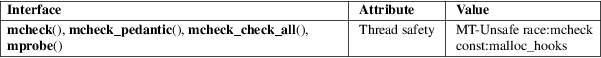

mcheck, mcheck_check_all, mcheck_pedantic, mprobe − heap consistency checking
Standard C library (libc, −lc)
#include <mcheck.h>
int
mcheck(void (*abortfunc)(enum
mcheck_status mstatus));
int mcheck_pedantic(void (*abortfunc)(enum
mcheck_status mstatus));
void mcheck_check_all(void);
enum mcheck_status mprobe(void *ptr);
The mcheck() function installs a set of debugging hooks for the malloc(3) family of memory-allocation functions. These hooks cause certain consistency checks to be performed on the state of the heap. The checks can detect application errors such as freeing a block of memory more than once or corrupting the bookkeeping data structures that immediately precede a block of allocated memory.
To be effective, the mcheck() function must be called before the first call to malloc(3) or a related function. In cases where this is difficult to ensure, linking the program with −lmcheck inserts an implicit call to mcheck() (with a NULL argument) before the first call to a memory-allocation function.
The mcheck_pedantic() function is similar to mcheck(), but performs checks on all allocated blocks whenever one of the memory-allocation functions is called. This can be very slow!
The mcheck_check_all() function causes an immediate check on all allocated blocks. This call is effective only if mcheck() is called beforehand.
If the system detects an inconsistency in the heap, the caller-supplied function pointed to by abortfunc is invoked with a single argument, mstatus, that indicates what type of inconsistency was detected. If abortfunc is NULL, a default function prints an error message on stderr and calls abort(3).
The mprobe() function performs a consistency check on the block of allocated memory pointed to by ptr. The mcheck() function should be called beforehand (otherwise mprobe() returns MCHECK_DISABLED).
The following
list describes the values returned by mprobe() or
passed as the mstatus argument when abortfunc
is invoked:
MCHECK_DISABLED (mprobe() only)
mcheck() was not called before the first memory allocation function was called. Consistency checking is not possible.
MCHECK_OK (mprobe() only)
No inconsistency detected.
MCHECK_HEAD
Memory preceding an allocated block was clobbered.
MCHECK_TAIL
Memory following an allocated block was clobbered.
MCHECK_FREE
A block of memory was freed twice.
mcheck() and mcheck_pedantic() return 0 on success, or −1 on error.
For an explanation of the terms used in this section, see attributes(7).

GNU.
mcheck_pedantic()
mcheck_check_all()
glibc 2.2.
mcheck()
mprobe()
glibc 2.0.
Linking a program with −lmcheck and using the MALLOC_CHECK_ environment variable (described in mallopt(3)) cause the same kinds of errors to be detected. But, using MALLOC_CHECK_ does not require the application to be relinked.
The program below calls mcheck() with a NULL argument and then frees the same block of memory twice. The following shell session demonstrates what happens when running the program:
$
./a.out
About to free
About to free a
second time
block freed twice
Aborted (core dumped)
Program
source
#include <mcheck.h>
#include <stdio.h>
#include <stdlib.h>
int
main(void)
{
char *p;
if
(mcheck(NULL) != 0) {
fprintf(stderr, "mcheck() failed\n");
exit(EXIT_FAILURE);
}
p = malloc(1000);
fprintf(stderr,
"About to free\n");
free(p);
fprintf(stderr, "\nAbout to free a second
time\n");
free(p);
exit(EXIT_SUCCESS);
}
malloc(3), mallopt(3), mtrace(3)